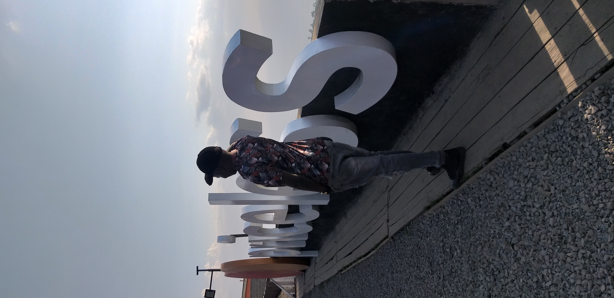

Mammet-tech

The Lens of Memory
"Through the lens, we capture not just images but emotions, memories, and stories that last a lifetime. Welcome to The Lens of Memory, where each photo tells a tale, each frame holds a feeling, and every moment is preserved for eternity. Step into a world of artistry and see life as I, Mammet, experience it—one photograph at a time."
"Discover my favorite moments captured through the lens."
"Hi, I’m Mammet, a storyteller who believes in the power of photography to capture life’s most meaningful moments. While I’m not a photographer, I’ve always been inspired by how a single image can evoke emotions and tell a story that words cannot. This website is my way of sharing the beauty and memories I cherish, seen through the lens of talented photographers and curated with love. Welcome to The Lens of Memory, where every photo has a story waiting to be discovered."